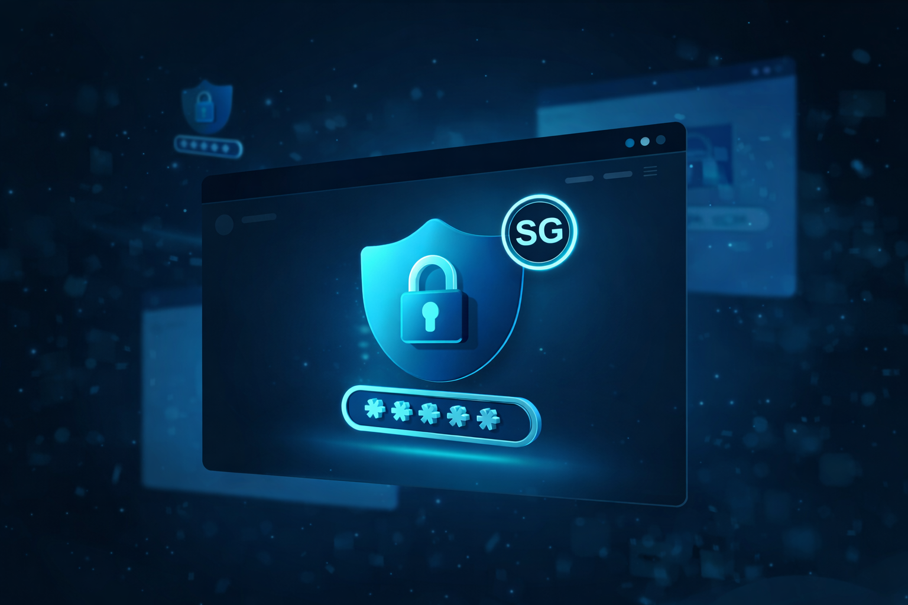

랜섬웨어 공격 증가
기업과 개인을 대상으로 한 랜섬웨어 공격이 지속적으로 증가하고 있으며, 중요 파일 암호화와 금전 요구 피해가 확대되고 있습니다.
자세히 보기CYBER SECURITY AWARENESS
피싱, 랜섬웨어, 개인정보 유출 등 다양한 보안 위협 사례를 소개하고
누구나 실생활에서 적용할 수 있는 예방법을 알려드립니다!

About Site
최근 피싱, 랜섬웨어, 개인정보 유출과 같은 보안 위협이 빠르게 증가하고 있습니다. 하지만 일반 사용자들은 위험성을 정확히 인지하지 못하거나, 어떻게 대처해야 하는지 모르는 경우가 많습니다.
본 사이트는 주요 보안 이슈를 카드 형식으로 쉽게 정리하고, 대표 보안 수칙과 OWASP Top 10 같은 핵심 내용을 한눈에 확인할 수 있도록 구성하였습니다.
Security Tips
배송 조회, 주소 수정 등을 유도하는 링크는 피싱일 수 있습니다.
→ 출처를 먼저 확인하고 의심 링크는 클릭하지 마세요.카페, 공공장소 와이파이에서는 개인정보가 노출될 위험이 있습니다.
→ 민감한 로그인은 피하고, 필요 시 보안 접속을 사용하세요.출처가 불분명한 첨부파일이나 프로그램은 악성코드일 수 있습니다..
→ 바로 실행하지 말고, 백신 검사 후 안전 여부를 확인하세요.본인이 접속하지 않았는데 로그인 알림이 왔다면 계정 탈취 시도일 수 있습니다.
→ 비밀번호를 즉시 변경하고 2단계 인증을 설정하세요.하나의 계정이 유출되면 다른 서비스까지 연쇄 피해가 생길 수 있습니다.
→ 서비스마다 다른 비밀번호를 사용하고 주기적으로 점검하세요.이벤트, 무료 쿠폰 등을 미끼로 악성 앱 설치를 유도할 수 있습니다.
→ 공식 스토어 외 다운로드는 피하고 권한 요청을 꼭 확인하세요.Latest Issues
OWASP Top 10
권한 검증이 제대로 이루어지지 않아 타인의 데이터에 접근 가능한 취약점
암호화가 미흡하여 민감한 정보가 노출될 수 있는 취약점
SQL Injection 등 악의적인 코드가 실행될 수 있는 입력값 취약점
보안을 고려하지 않은 설계로 인해 발생하는 구조적 취약점